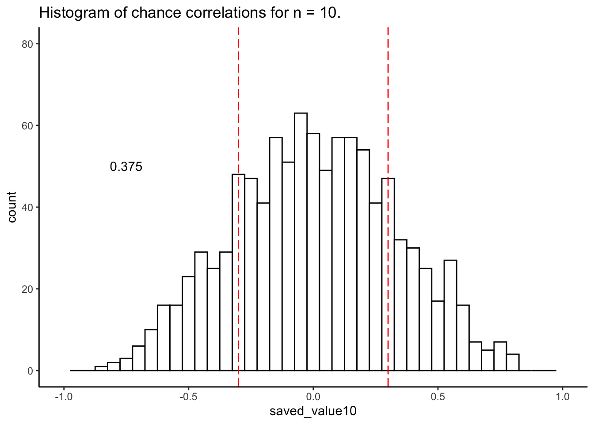
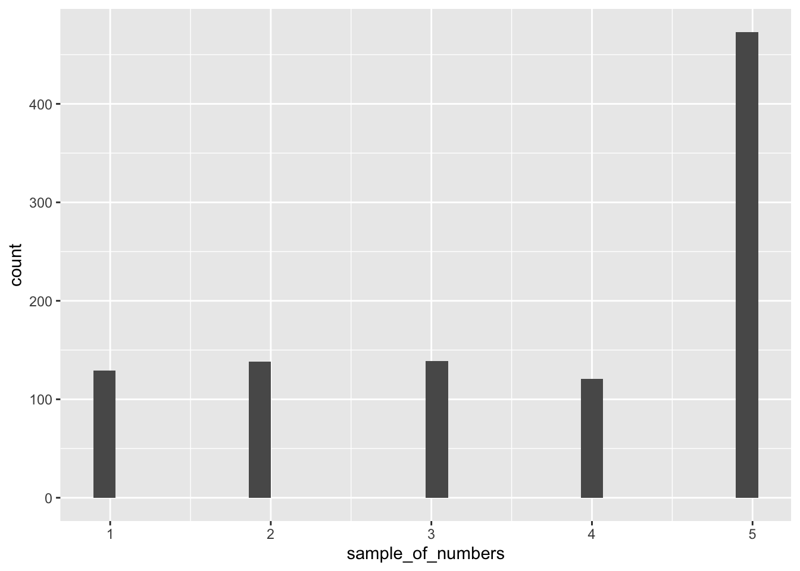
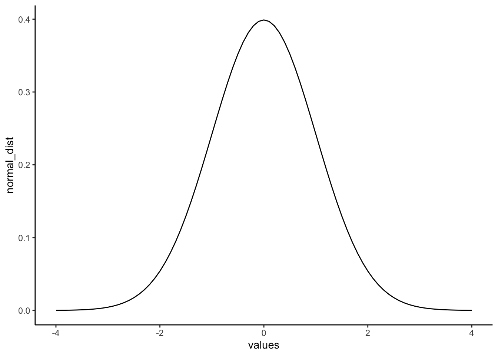

5 Part two: generating data in R
There are many ways to make R generate numbers for you. We already looked at using a uniform distribution to generate numbers for our random correlations. In this next part, we will explore additional functions and distributions to generate random numbers.
5.0.1 sample()
The sample function is like an endless gumball machine. You put the gumballs inside with different properties, say As and Bs, and then you let sample endlessly take gumballs out. Check it out:
## [1] "A" "B" "A" "A" "A" "B" "B" "B" "B" "B"Here the sample function randomly picks A or B each time. We set it do this 10 times, so our sample has 10 things in it. We set replace=TRUE so that after each sample, we put the item back into the gumball machine and start again. Here’s another example with numbers:
some_numbers <- c(1,2,3,4,5,5,5,5)
sample_of_numbers <-sample(some_numbers, 20, replace=TRUE)
sample_of_numbers## [1] 2 4 3 5 3 4 4 2 5 5 5 5 5 5 4 5 5 1 2 3Let’s do one more thing with sample. Let’s sample 1000 times from our some_numbers variable, and then look at the histogram
some_numbers <- c(1,2,3,4,5,5,5,5)
sample_of_numbers <-sample(some_numbers, 1000, replace=TRUE)
hist(sample_of_numbers)
# we are using the built in hist() function. we could also use ggplot to generate this histogram:
ggplot(data.frame(sample_of_numbers),aes(x=sample_of_numbers)) + geom_histogram()
We are looking at lots of samples from our little gumball machine of numbers. Notice that as we put more 5s in, more 5s come out of in our big sample of 1000.
5.0.2 rbinom()
You can think of the binomial distribution as a coin flipping distribution. Or dice roll distribution. Or anything you can define a number of “successes” for. For example, when flipping a coin, we could consider flipping heads a “success”.
You use rbinom as follows: rbinom(n, size, prob). n gives the number of flips you want to make. size is the number of coins you want to flip at once. prob is the probability that defines how often a “success” happens. Here’s how we flip one coin 10 times using rbinom (assuming the coin is fair):
## [1] 1 0 0 1 0 0 0 0 0 1We get a bunch of 0s, and 1s. We can pretend 0 = tails, and 1 = heads. If you flip 10 coins, how many heads do you get? We can can do the above again, and then sum(coin_flips).
## [1] 6Alright, so we get the sum of the 1s (i.e. the successes), which tells us the number of heads. But, if you keep redoing the above, you’ll get different answers each time. 5 heads will be the most frequent answer, but you will get lots of other answers too.
We could do this 1000 times over, saving the number of heads for each set of 10 flips. Then we could look at the distribution of those sums. That would tell us about the range of things that can happen when we flip a coin 10 times. We can do that in a for loop like this:
save_number_of_heads<-length(1000) # make an empty variable to save things in
for(i in 1:1000){
save_number_of_heads[i] <- sum(rbinom(10,1,.5))
}
hist(save_number_of_heads)
The histogram shows us the frequency observing different numbers of heads (for 10 flips) across the 1000 simulations. 5 happens the most, but 2 happens sometimes, and so does 8. All of the possibilities seem to happen sometimes, some more than others.
5.0.3 rnorm()
We’ll quickly show how to use rnorm(n, mean=0, sd=1) to sample numbers from a normal distribution.

There it is, a bell-shaped normal distribution with a mean of 0, and a standard deviation of 1. You’ve probably seen things like this before. Now you can sample numbers from normal distributions with any mean or standard deviation, just by changing those parts of the rnorm function.
5.0.4 Mixing it up
The r functions are like Legos, you can put them together and come up with different things. What if wanted to sample from a distribution that looked like a two-humped camel’s back? Just sample from rnorm twice like this… mix away.
 You can generate as many numbers under a certain distribution as your computer can handle.
You can generate as many numbers under a certain distribution as your computer can handle.
5.0.5 Graphing the normal distribution
“Wait, I thought we already did that”. We sort of did. We sampled numbers and made histograms that looked like a normal distribution. But, a normal distribution is more of an abstract idea. It looks like this in the abstract:
normal_dist <- dnorm(seq(-4,4,.1), 0, 1)
values <-seq(-4,4,.1)
normal_df <-data.frame(values,normal_dist)
ggplot(normal_df, aes(x=values,y=normal_dist))+
geom_line()+
theme_classic()
A really nice shaped bell-like thing. This normal distribution has a mean of 0, and standard deviation of 1. The heights of the lines tell you roughly how likely each value is. Notice, it is centered on 0 (most likely that numbers from this distribution will be near 0), and it goes down as numbers get bigger or smaller (so bigger or smaller numbers get less likely). Notice the values don’t go much beyond -4 and +4. This is because those values don’t happen very often. Theoretically any value could happen, but really big or small values have really low probabilities.
5.0.6 Calculating the probability of specific ranges.
We can use R to tell us about the probability of getting numbers in a certain range. For example, when you think about. It should be obvious that you have a 50% probability of getting the number 0 or lower. Half of the distribution is 0 or lower, so you have a 50% probability.
We can use the pnorm() function to confirm this:
## [1] 0.5Agreed, pnorm() tells us the probability of getting 0 or lower is 0.5.
Well, what is the probability of getting a 2 or greater? That’s a bit harder to judge, but obviously less than 50%. Use R like this to find out:
## [1] 0.9772499That doesn’t seem quite right. R is telling us the probability is 0.977, while we know it should be smaller than 0.5. That’s because by default, pnorm() gives the probability “up to and including” (denoted: P[X ≤ x]). The figure below visualizes what that means:
 So, to get the probability of getting a 2 or greater, we simply take \(1 - 0.9772499 = 0.0227501\):
So, to get the probability of getting a 2 or greater, we simply take \(1 - 0.9772499 = 0.0227501\):

Or we could use the lower.tail argument:
## [1] 0.02275013The probability of getting a 2 or greater is .0227 (not very probable)
5.0.7 z-scores
We just spent a bunch of time looking at a very special normal distribution, the one where the mean = 0, and the standard deviation = 1. This is also called the standard normal distribution. Then we got a little bit comfortable with what those numbers mean. 0 happens a lot, but numbers bigger than 2 don’t happen a lot.
Often, we are not dealing with numbers exactly like these. For example, someone might say, I got a number, it’s 550. It came from a normal distribution with mean = 600, and standard deviation = 25. So, does 545 happen a lot or not? The numbers don’t tell you right away. But if we were talking about the standard normal distribution with mean = 0 and standard deviation = 1, and I told I got a number 4.5 from that distribution, you would automatically know that 4.5 doesn’t happen a lot.
z-scores are a way of transforming one set of numbers into the standard normal distribution, with mean = 0 and standard deviation = 1.
If you have a normal distribution with mean = 550, and standard deviation 25, then how far from the mean is the number 575? It’s a whole 25 away (550+25 = 575). How many standard deviations is that? It’s 1 whole standard deviation. So does a number like 575 happen a lot? Well, based on what you know about normal distributions, 1 standard deviation of the mean isn’t that far, and it does happen fairly often. This is what we are doing here.
5.0.8 Calculating z-scores
- get some numbers
- Calculate the mean and standard deviation
## [1] 39.06857## [1] 26.36504- subtract the mean from your numbers
## [1] -0.2923236 -1.6193368 -14.6666792 5.4431838 -0.2317631 30.5393514
## [7] -7.9835620 77.4467785 1.5075487 -45.0975705 -8.1532058 -16.5413958
## [13] -4.2853087 14.7056474 -19.3065968 -5.9684006 -41.1969307 -6.5114877
## [19] 33.6686815 8.5433700- divide by the standard deviation
## [1] -0.011087544 -0.061419850 -0.556292679 0.206454592 -0.008790544
## [6] 1.158327479 -0.302808635 2.937479927 0.057179836 -1.710506372
## [11] -0.309243056 -0.627398827 -0.162537531 0.557770701 -0.732280174
## [16] -0.226375550 -1.562558951 -0.246974307 1.277019885 0.324041599Done. Now you have converted your original numbers into what we call standardized scores. They are standardized to have the same properties (assumed properties) as a normal distribution with mean = 0, and SD = 1. You could look at each of your original scores, and try to figure out if they are likely or unlikely numbers. But, if you make them into z-scores, then you can tell right away. Numbers close to 0 happen a lot, bigger numbers closer to 1 happen less often, but still fairly often, and numbers bigger than 2 or 3 hardly happen at all.
5.0.9 Distribution exercises
Suppose we want to know the probability of getting a score between -1 and 1?
## [1] 0.6826895About 68%. About 68% of all the numbers would be between -1 and 1. So naturally, about 34% of the numbers would be between 0 and 1. Notice, we are just getting a feeling for this, you’ll see why in a bit when we do z-scores (some of you may realize we are already doing that…)
What about the numbers between 1 and 2?
## [1] 0.1359051About 13.5% of numbers fall in that range, not much.
How about between 2 and 3?
## [1] 0.02140023Again a very small amount, only 2.1 % of the numbers, not a a lot.
5.0.10 z-score exercises
Here is a link to an SPSS file containing 50 students’ exam grades (let’s say it’s the final exam for a Statistics class).
Create a table containing the mean and standard deviation for this sample of scores. Now, produce a frequency histogram of the score data. Describe the distribution.
Transform each student’s score into a Z-score. Now, plot the frequency histogram of this Z-score distribution. Compare it to the raw score distribution. How are they the same? How are they different?
Imagine you are a student in this class who received a 90 on this exam. However, the Professor has decided to grade on a curve, such that only the top 10% of the class receives an A (this professor only gives whole grades, no minuses or pluses). Calculate the z-score that corresponds to a raw score of 90 on this exam. Will you get an A with this grade? Why or why not?